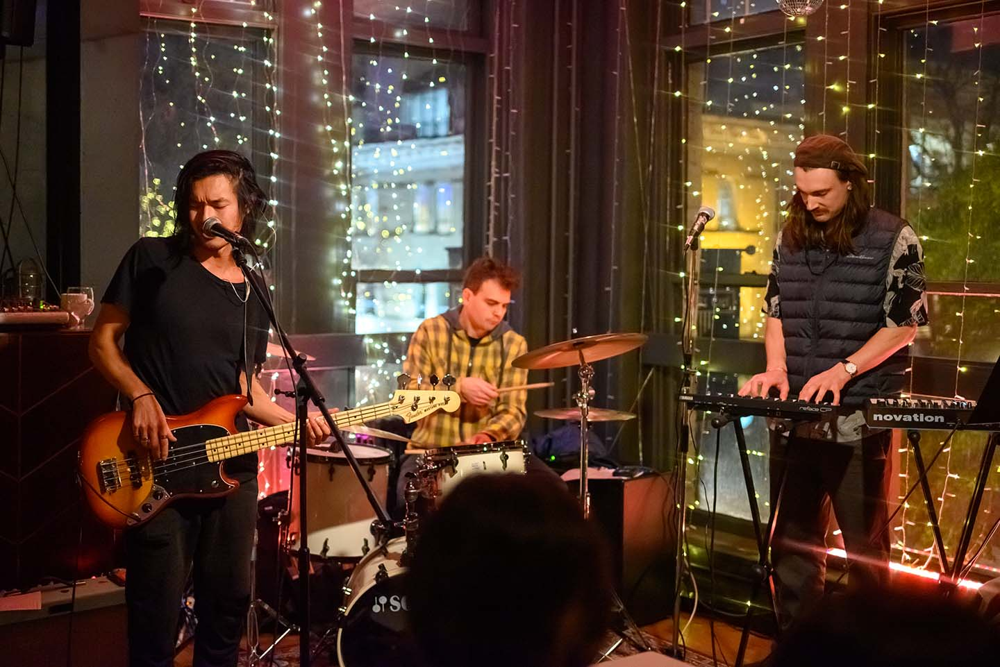

Daniel Lew is a musician, producer, and singer-songwriter based in Vancouver, Canada. 10 years ago, he suddenly lost 90% of hearing in his left ear. He was shown a glimpse of life without sound, and this became the driving force of his journey. It taught him to surrender to his passion and shaped his voice is to be delicately fierce. His songwriting blends the heart of John Lennon, the cleverness of John Mayer, and the courage of Bob Dylan.
With Daniel, I have worked alongside him in collaboration of creating his album artwork for his single "Until I Settle", in addition to photographing some of his live events and performances.
Listen to Daniel's single "Until I Settle" and third album "Surrender" now!
